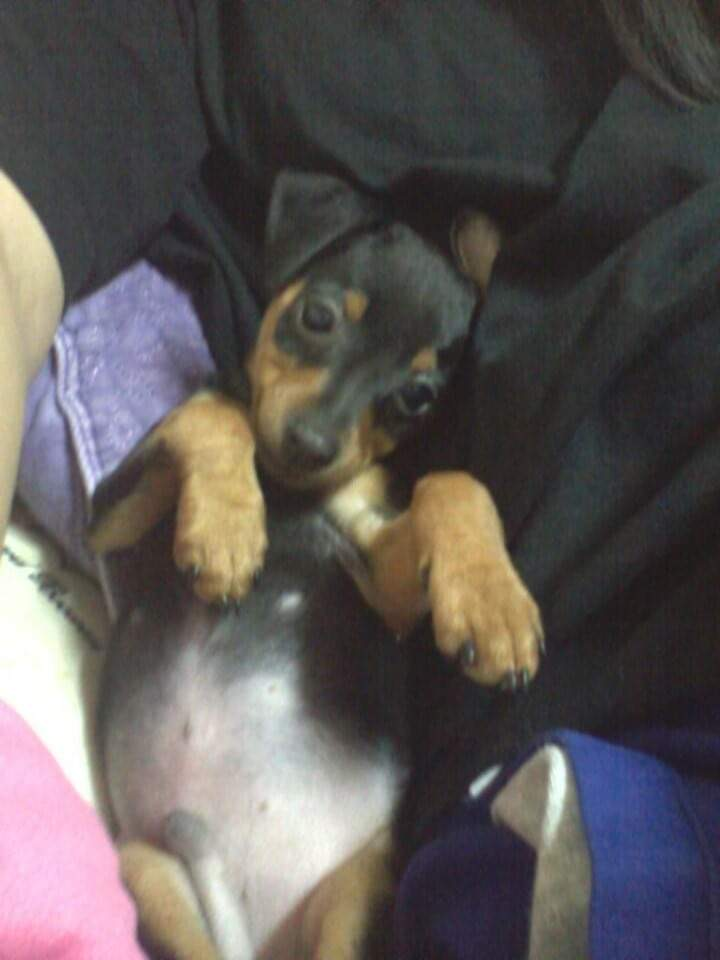

쫑이는 2012년 11월 15일에 태어나 2013년 02월 09일에 공주네 집에 왔다.
쫑이는 미니핀으로 미니핀은 작지만 완고하며 활기차고 자신감이 넘치는 성격을 가지고 있다. 작은 크기에도 불구하고 큰 품종의 특성을 지니고 있어 영토를 지키기 위해 경계하는 기질도 조금은 강한 편이다. 이러한 특성으로 낯선 사람에게 공격적인 행동을 보이는 문제행동을 보일 수 있기 때문에 어릴때부터 확고하고 지속적인 훈련을 해주어야한다. 미니핀은 보호자에게 순종적이고 똑똑해서 빨리 판단할 수 있는 능력을 가지고 있기 때문에 일관성있게 교육을 해주시는 것이 좋다. 또 주인에 대한 충성심이 높고 보호자에게 의존도가 높은 강아지이다.
쫑이한테는 단 한번도 물려본 적이 없다. 그만큼 너무 착하고 사랑스럽다. 공주네 집에 가면 내 무릎에 엉덩이부터 대고 본다. 매우 사랑스럽다. 또 공주가 "누나가 쫑이 밥 뺏어먹을까?"라고 하면 매우 짖으며 경계한다. 내가 볼 땐 공주가 한 번 뺏어먹은적이 있는 것 같다. 매우 귀엽다.